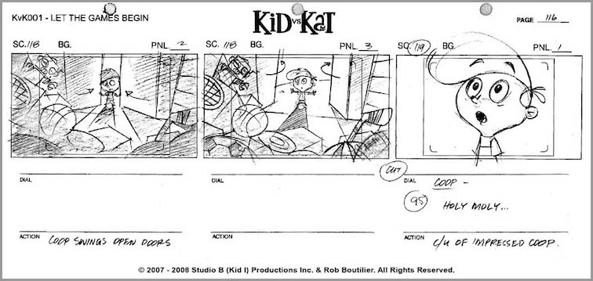

Teaching Point:
Today we will learn how to use Scratch to tell a simple Story.
Using Scratch for to Tell a Story
Using Scratch for stories doesn not involve any new skill. It is actually easier than a lot of the stuff that we've been doing. We can tell the character what to do, how long to do it for, and what order to do it in. All that we need to do is put the things we want our character to do or say under a Green Flag in order. We can use the move blocks, the say blocks, and the think blocks to show what is going on in our scene.
Before we start our Choose Your Own Adventure Story, we are going to practice by putting together a scene that tells a simple joke. We will use the following elements:
- A new Sprite which will be the title of our joke. It should be written in big letters across the top of the screen. Most jokes don't have real titles, so you can make one up.
- A new Sprite that will be our character. If you need more than one character for the joke, use more.
- A background.
Here is a list of links to kids jokes if you need some ideas.
Today's Assignment
Set up your joke by making the sprites listed above. No need for code today.
Back to School Portal